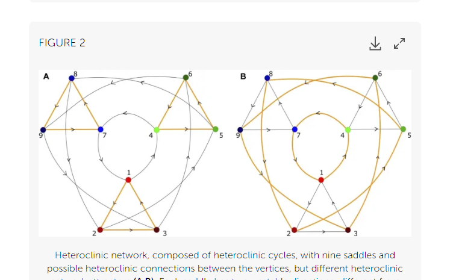
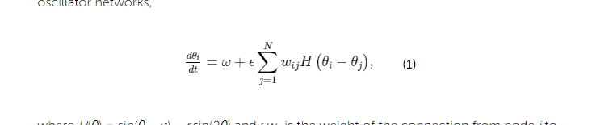
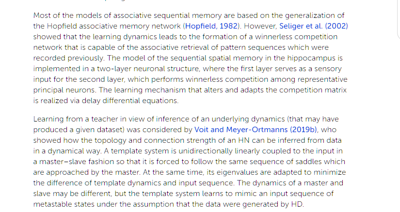
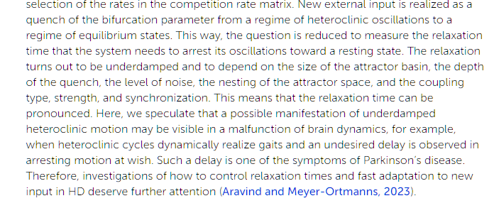
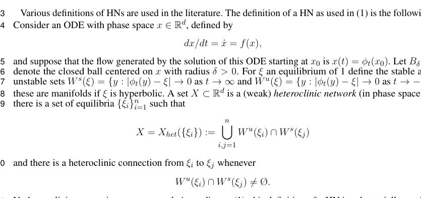

Completed Josephson follow-up, 10 October 2026: The dimensionless voltage-sweep experiment is now complete, including the four step/settling combinations, independent averaging-window checks, upward/downward/fresh starts, and further refinements where the initial checks failed. Numerical results and runnable code links are in the separate extension. Noise, mismatch, capacitance, asymptotic hysteresis and Josephson history-learning tests remain proposed.
Completed follow-up, 10 October 2026: A limited recovery and network pilot is now complete: forcing shutoff in a smooth 3D fluid and a separate three-state competition model with offline, frozen parameter learning. The original proposed nine-saddle and online-learning extensions remain uncompleted. The separate Josephson sweep is now completed and linked above.
Reference and proposed extension. These newly supplied images have been identified and integrated. This addendum adds no completed numerical experiment, changes no pilot score, and does not claim that the simulated fluid has a heteroclinic network.
The images match Figure 2 and Equation (1) of Hildegard Meyer-Ortmanns, Heteroclinic networks for brain dynamics (2023), DOI 10.3389/fnetp.2023.1276401. The figure's vertices are saddle states in phase space; the arrows represent connections between states. Its two panels select different cyclic routes. They are not nine fluid particles or a map of nine physical oscillator-to-oscillator couplings.

The phase-oscillator equation is a separate example discussed in that review. The full source supplies the coupling function omitted by the crop:
Here εwij weights the influence of oscillator j on i. Choosing nine oscillators does not reproduce the nine-saddle diagram. The weights, parameters, initial conditions and relevant invariant states must be specified independently. Thakur and Meyer-Ortmanns's original pacemaker study studies entrainment of heteroclinic units, rather than a Navier–Stokes fluid.

The following are proposed tests for this project, not findings from the completed pilot:
With a fully specified deterministic first-order state and a unique solution, the future follows from the present state. A useful history predictor for a coarse observation can recover missing state information without establishing an additional physical memory law. These tests would sharpen H2 and H3; they do not replace the fluid pilot's measured disturbance-response result.
The new sequential-memory excerpt distinguishes two ideas. In the cited winnerless-competition example, learning changes a competition matrix. In Voit and Meyer-Ortmanns (2019), Dynamical Inference of Simple Heteroclinic Networks, a template is driven by a teaching signal while parameters controlling local eigenvalues adapt. The method assumes a suitable heteroclinic model class; reproducing a sequence does not establish that an arbitrary observed system belongs to that class.
Our fluid pilot fits a predictor to recorded trajectories; its Navier–Stokes coefficients do not learn or adapt. A proposed adaptive-model extension must therefore distinguish four comparisons: current-only prediction, history-augmented prediction, a fixed-parameter dynamical surrogate, and a learned-parameter surrogate. Give each model the same training information, tune only on validation runs, freeze learning before the test interval, remove the teaching signal, and evaluate autonomous predictions of new disturbed and undisturbed runs. Include a shuffled teaching sequence and a matched-capacity non-heteroclinic surrogate. Good tracking during forced teaching is not sufficient evidence of forecasting skill.

Aravind and Meyer-Ortmanns (2023), On relaxation times of heteroclinic dynamics, studies a sudden parameter change from an oscillatory regime to one with resting states. Its reported relaxation depends on the quench, noise, attractor geometry and coupling. This is a parameter intervention, distinct from a state kick at fixed parameters. The clinical connection mentioned in the supplied review is explicitly speculative and is not a result of this fluid study.
Proposed paired protocol: settle a specified model into reproducible motion, copy its complete state, and change one prescribed parameter in one copy. Compare unchanged, abrupt-change and matched-endpoint gradual-change controls. Record both the first arrival in a resting-state tolerance band and the first arrival followed by a predeclared continuous residence window. Repeat with tolerance and residence-window sensitivity; with noise, report return/escape probabilities and runs that do not settle before the observation ends. Measure overshoot, oscillation count, settling-time distributions and the relevant energy or work budget. An oscillating observable in a first-order state-space model does not by itself demonstrate mechanical inertia.
For a fluid extension, a change in forcing is an explicitly modelable intervention. A viscosity change requires a stated constitutive or thermal model and associated assumptions. Quench results must be labeled separately from the completed velocity-impulse study. Test whether past organization predicts recovery after conditioning on the current observed state and the intervention size. Slow recovery alone establishes neither weak interactions nor an independent memory mechanism.

The supplied definition starts from ẋ=f(x) and its flow φt. For an equilibrium ξ, the stable set Ws(ξ) contains states y for which φt(y) approaches ξ as t→+∞; the unstable set Wu(ξ) uses t→−∞. Under the hyperbolicity assumptions in the excerpt these sets have the corresponding stable/unstable manifold structure.
A heteroclinic orbit joins distinct invariant states (i≠j here). A nonconstant orbit returning to the same equilibrium in both time directions is homoclinic; the stationary equilibrium itself must not be counted as a switching event. Definitions of a heteroclinic network vary, and may impose additional closure, connectivity or chain-transitivity conditions. The cropped union formula alone establishes neither that a proposed network is attracting nor that its connections survive arbitrary perturbations.
Consequence for the proposed experiments: numerical dwell/transition labels describe finite-time observations. Verifying a heteroclinic claim also needs the underlying equilibria or other invariant states, stable/unstable directions, and evidence for connecting orbits under specified model assumptions. With persistent stochastic forcing, those deterministic infinite-time limits cannot simply be assigned to every noisy trajectory. For fluid applications, passive marker paths live in physical space while candidate flow states belong to the velocity-field state space; the two must not be conflated.

Now completed as a separate numerical extension. The original pilot contained only the conditional circuit model and algebraic tests. The new sweep report supplies dimensionless curves, quantitative controls, recorded arrays and code, and retains the initial failed numerical checks. It does not supply component-specific laboratory data. The following paragraphs describe the original control rationale.
User-supplied caption, now accompanied by numerical curves: “Dimensionless Josephson sweep. Solid curves use the initial integration settings; dotted curves use half the step and twice the settling time. Critical-window voltage can remain sensitive to history and observation time.”
The combined dotted-curve check is useful, but changes two controls at once. Use four matched calculations: (Δt, Tsettle), (Δt/2, Tsettle), (Δt, 2Tsettle), and (Δt/2, 2Tsettle). Keep the voltage averaging window fixed for these comparisons, then vary that window separately. Publish all settings and the initial phases, load ratio, bias grid and sweep direction.
In the pilot's identical overdamped-junction normalization, τ=(2eIcr/ℏ)t. The dimensionless total series voltage is v=V/(Icr)=d(φ1+φ2)/dτ. Estimate its finite-window mean from unwrapped phase increments after settling, not from wrapped-phase differences. Also retain each junction's mean voltage.
Compare upward/downward continuation with freshly initialized fixed-bias runs and multiple initial phases. This separates inherited sweep state from differences that remain after a longer observation. Report the distribution across starts and finite observation windows near the critical region; residual differences alone are not evidence for a new physical memory law or true asymptotic hysteresis. A model with capacitance, noise or thermal dynamics needs its own equations and validation.